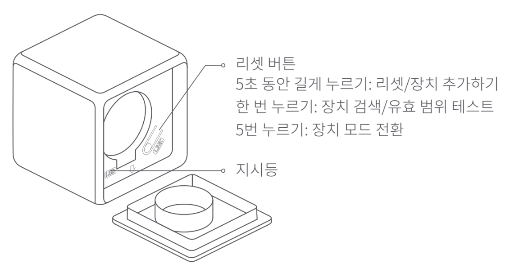
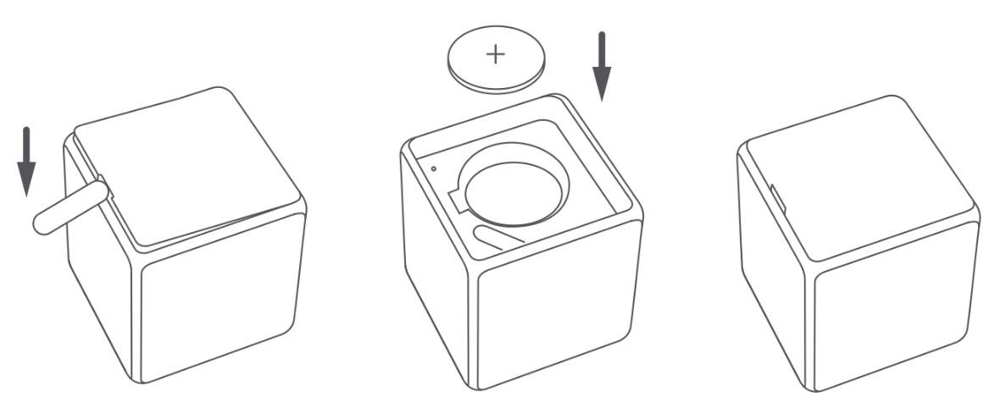
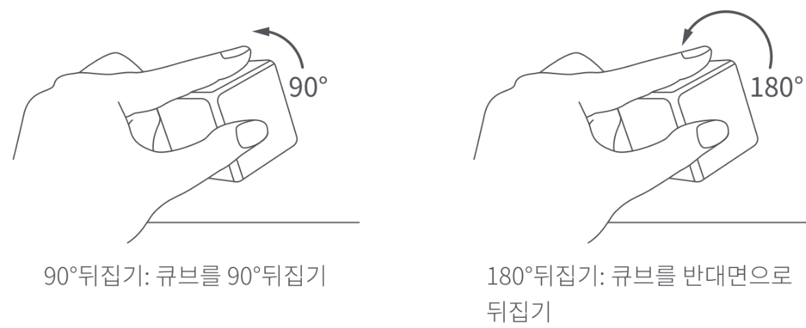
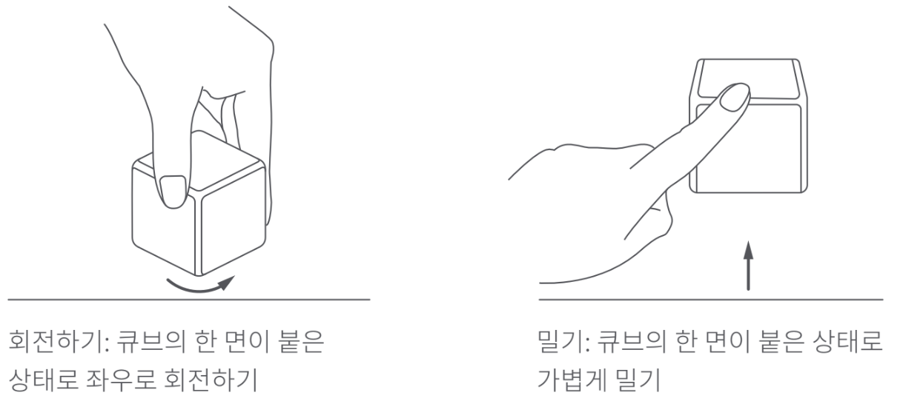
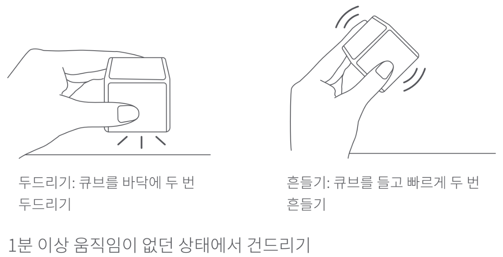
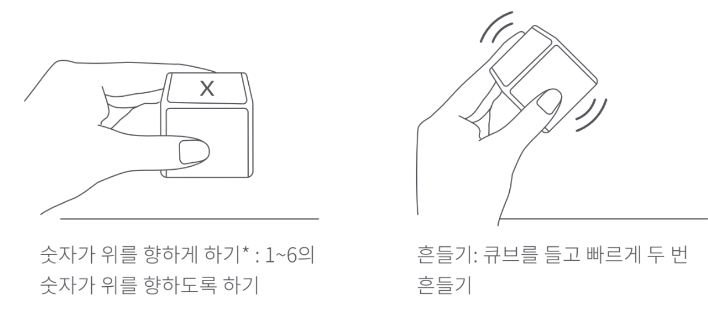
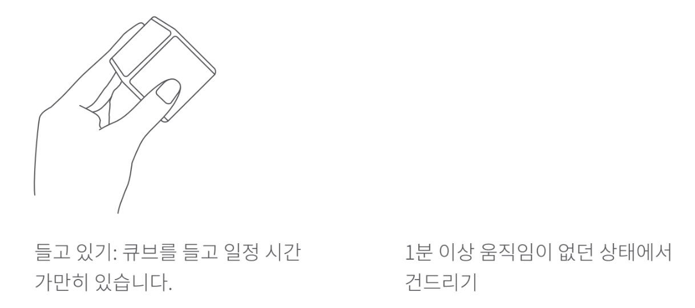

15 스마트 큐브 T1 Pro
15.1 제품 소개
아카라 큐브 T1 Pro는 최신형 무선 컨트롤러로 액션 모드와 장면 모드 두가지 모드를 지원합니다. 액션 모드는 90’ 뒤집기, 180’ 뒤집기, 두번 두드리기, 밀기, 흔들기, 회전하기 등 6가지 모드를 지원합니다. 장면 모드는 1~6의 각 숫자가 위를 향하는 경우 흔들기, 회전, 들고 있기 등 다양한 제어 방법을 지원합니다.
- 해당 제품을 사용하기 위해서는 Zigbee을 지원하는 아카라 스마트 헙브가 반드시 필요합니다. 자세한 내용은 www.aqara.com/support를 참조해 주세요.

15.2 빠른 설정
15.2.1 장치 추가
(1) Aqara Home앱 다운로드
앱 스토어에서 “Aqara Home”을 검색하거나 아래 로고를 클릭해 주세요.


(2) Zigbee을 지원하는 아카라 허브가 반드시 필요합니다. 허브 설치 가이드에 따라 아나카 허브를 설치해 주세요.
(3) 동봉되어 있는 철제 도구를 사용하여 배터리 커버를 열어 주세요.
(4) 아카라 홈 앱의 우측 상단의 “+”를 눌러 “장치 추가” - “큐브 T1 Pro”를 선택한 다음 연결할 허브를 선택해 주세요. 앱의 안내에 장치를 추가하고, 허브에 정상적으로 연결되었음을 확인 할 때까지 리셋 버튼을 5초가 길게 눌러 주세요.
(5) 자세한 내용은 aqara.com/support를 참고해 주세요.
장치 추가에 실패에 경우 최대한 아카라 허브 근처로 이동한 후 다시 시도해 주세요.
리셋 버튼을 빠르게 한번 누르거나 큐브를 크게 한번 휘둘러 주세요. 허브에서 소리가 나는 경우 장치와 허브가 정상적으로 연결되었음을 의미합니다.
연결하는 스마트 허브마다 다른 방식으로 연결에 성공했다는 메시지를 표시합니다. 자세한 내용은 각 스마트 허브의 설명을 참고해 주세요.
15.2.2 유효 범위 테스트
유효 범위 테스트: 큐브를 크게 한번 휘두르거나 리셋 버튼을 누르세요. 허브에서 안내 메시지가 나오는 경우 장치와 허브가 정상적으로 연결되었음을 의미합니다.
- 안정적인 통신을 위해 금속 표면에서 사용하지 마세요.
15.2.3 모드 전환하기
아카라 홈 앱을 열어 큐브 T1 Pro를 선택한 후 상단의 “…” 를 눌러 주세요. “추가 설정”을 선택하여 “모드 전환”에서 원하는 모드를 선택해 주세요.
15.2.4 배터리 교체
동봉된 철제 도구로 큐브 T1 Pro의 배터리 커버를 열고 새로운 CR2450 배터리로 교체해 주세요. (+가 위를 향하도록 교체되었는지 잘 확인해 주세요.)

15.2.5 사용 방법
액션 모드



장면 모드


15.3 제품 사양
모델명: CTP-R01
제품 크기: 45 x 45 x 45mm
제품 무게: 76g
배터리 타입: CR2450
무선통신 프로토콜: Zigbee 3.0
작동 온도: -10’C ~ 50’C
작동 습도: 95% RH 이하 / 비결로 조건